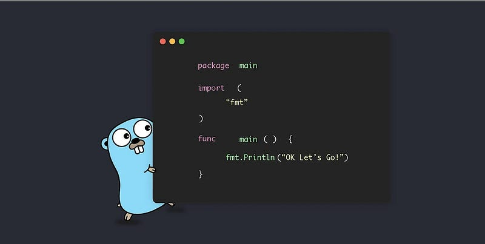
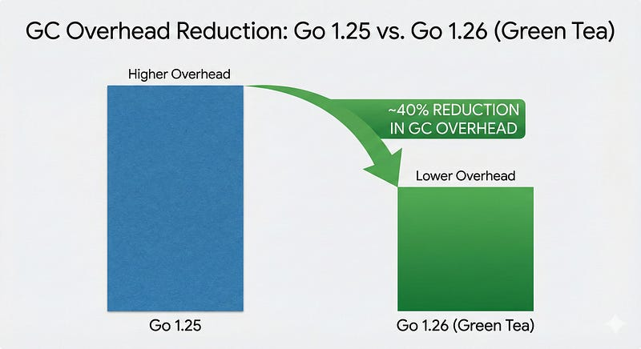
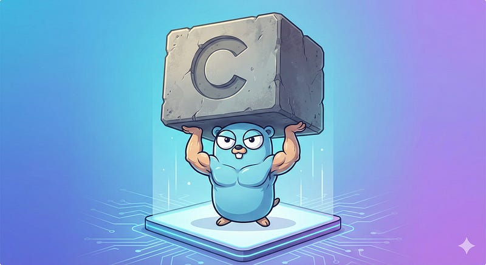
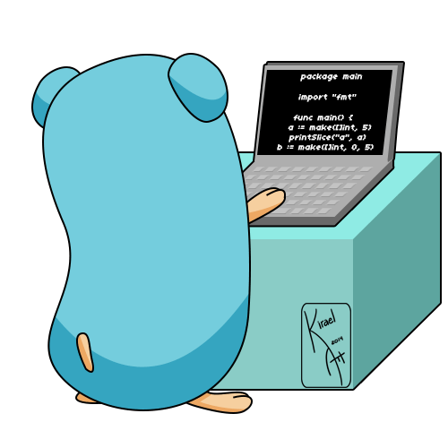

Most developers treat Go updates like a routine chore brew upgrade go, check if the build passes, and move on. Go has built a reputation for being "boring" and that is usually a compliment. It implies stability, backward compatibility, and no breaking changes.
But Go 1.26 is different. While it doesn’t introduce a paradigm shift like Generics in 1.18, it brings a collection of “quality of life” improvements and a massive under-the-hood performance boost that you get strictly for free.
If you are running high-throughput services or writing complex APIs, this release directly impacts your bottom line. Let’s dive into the hidden gems of Go 1.26 and how to use them like a pro.
The new keyword
For years, initializing a pointer to a primitive value in Go was clunky. You couldn’t just get a pointer to a literal. You had to create a variable first, then point to it.
// Boilerplate city
val := int64(300)
ptr := &val
// Or using a helper function you probably wrote yourself
func Int64Ptr(i int64) *int64 { return &i }
ptr := Int64Ptr(300)This pattern littered codebases, especially when dealing with optional JSON fields or SQL nullable types. But Go 1.26 introduces new(expr). The built-in new function now accepts an expression, specifying the initial value of the variable.
// Clean, readable, and standard
ptr := new(int64(300))
// Works with structs too
config := new(Config{
Port: 8080,
Debug: true,
})Green Tea GC

Garbage collection (GC) pauses are the silent killers of high-performance systems. In Go 1.26, the team has enabled the Green Tea Garbage Collector by default.
Previously an experimental feature, Green Tea is designed to improve the performance of marking and scanning small objects, a scenario extremely common in microservices handling JSON requests.
The results? A 10–40% reduction in GC overhead for typical workloads.
You don’t need to change a single line of code to get this benefit. However, if you are strictly tuning for low latency, you should audit your metrics after upgrading.
Pro Tip: If you suspect the new GC behavior is affecting your specific edge case, you can temporarily opt-out (though I wouldn’t recommend it long-term) using GOEXPERIMENT=nogreenteagc go build .But for 99% of use cases, this is simply free speed.
Self-Referential Types
When Generics first landed, they had limitations. One frustration was defining complex data structures where a type needed to refer to itself in its own constraint.
Go 1.26 lifts this restriction. Generic types can now refer to themselves in their own type parameter list.
Why does this matter?
It simplifies the implementation of graph structures, linked lists, and fluent APIs that use generics.
// Previously, this was a headache.
// Now, it's straightforward.
type Node[T any] struct {
Value T
Next *Node[T] // Self-referential use is cleaner
}
// Or more complex constraints for fluent interfaces
type Builder[B any] interface {
Build() B
SetNext(B) B
}This allows for more expressive libraries without the “gymnastics” we previously had to perform to satisfy the compiler.
Revamped ‘go fix’
Technical debt accumulates silently. Deprecated APIs linger because refactoring them is tedious.
The go fix command has been completely rewritten in 1.26 to use the standard Go analysis framework. It now includes modernizers ie. analyzers that don't just fix bugs but actively suggest newer, better idioms.
It can automatically inline certain function calls and update your code to use the latest standard library features, ensuring your codebase doesn’t rot over time.
CGO Overhead Reduced
If you are using Go for systems programming, cryptography, or interacting with legacy C libraries, you know the CGO tax ie. the performance penalty paid every time Go calls C code.
Go 1.26 reduces the baseline runtime overhead of CGO calls by approximately 30%.
This is achieved through optimizations in the runtime’s stack switching and scheduler interactions. For applications that rely heavily on libraries like sqlite3 (which uses CGO) or custom graphics drivers, this translates to a significant throughput increase.

Conclusion
Go 1.26 isn’t flashy, but it is substantial. It targets the friction points of daily development:
- Syntactical sugar :
new(expr)cleans up pointer spaghetti. - Performance : Green Tea GC and CGO improvements make apps faster by default.
- Maintainability : A smarter
go fixhelps keep code fresh.
Update your toolchain, delete those helper functions, and enjoy the free performance boost. Happy coding with Go 1.26 !!
